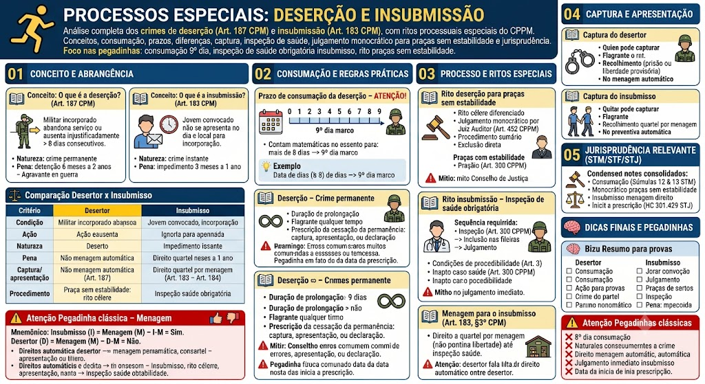

O que é a deserção? (Art. 187 do CPM)
O que é a deserção? (Art. 187 do CPM)
A deserção é o crime militar cometido pelo militar que, já tendo se incorporado às fileiras da Força Armada ou da Polícia Militar, abandona o serviço ou se ausenta injustificadamente por mais de 8 (oito) dias consecutivos (Art. 187 do CPM).
Natureza: é um crime permanente – enquanto o militar estiver ausente, a infração permanece sendo cometida.
Pena: detenção de 6 meses a 2 anos (Art. 187, caput).
Agravante (Art. 187, §1º): se a deserção ocorrer em tempo de guerra, a pena é aumentada.
O que é a insubmissão? (Art. 183 do CPM)
O que é a insubmissão? (Art. 183 do CPM)
A insubmissão é o crime militar cometido pelo jovem convocado para o serviço militar obrigatório que não se apresenta no dia e local marcados para a incorporação (Art. 183 do CPM).
Natureza: é um crime instantâneo – consuma-se no momento da não apresentação.
Pena: impedimento de 3 meses a 1 ano (Art. 183, caput).
Diferença crucial (CAI MUITO!):
- Desertor: já era militar (servia ativamente) e abandonou o serviço;
- Insubmisso: nunca foi militar (não se apresentou à convocação), portanto não chegou a servir.
⚠️ Pegadinha clássica – Menagem
⚠️ Pegadinha clássica – Menagem
📌 O insubmisso tem direito ao quartel por menagem quando se apresenta ou é capturado (Art. 183, §3º do CPM e Art. 300 do CPPM).
📌 O desertor, ao ser capturado ou se apresentar, NÃO tem direito à menagem automática – deve aguardar a decisão do juiz, que pode conceder ou não, dependendo das circunstâncias.
🧠 Mnemônico: “Insubmisso (I) = Menagem (M) – I-M = Sim. Desertor (D) = Menagem (M) – D-M = Não.”
Prazo de consumação da deserção – ATENÇÃO!
Prazo de consumação da deserção – ATENÇÃO!
O CPM (Art. 187) estabelece que a deserção se consuma quando o militar se ausenta por mais de 8 (oito) dias consecutivos.
Contagem matemática (cai muito!):
- Se o militar faltar ao serviço no dia 1 (primeiro dia de ausência), ele fica ausente:
- Até o 8º dia – é apenas infração disciplinar (falta grave).
- No 9º dia (após completar 8 dias de ausência) – consuma-se o crime de deserção.
📌 Dica: A deserção se consuma no 9º dia de ausência injustificada, pois a lei exige \"mais de 8 dias\" – ou seja, o 9º dia é o marco.
💡 Exemplo: O militar deveria comparecer no dia 10. Não comparece. O dia 10 é o 1º dia de ausência. A deserção se consuma no dia 18 (9º dia).
Deserção – Crime permanente
Deserção – Crime permanente
A deserção é crime permanente (Art. 187, caput). Isso significa que:
- O crime se prolonga no tempo enquanto o militar permanecer ausente;
- A prescrição conta do dia em que o militar se apresenta, é capturado ou é declarado desertor (cessação da permanência);
- O flagrante pode ocorrer a qualquer momento, enquanto o militar estiver na condição de desertor.
Prescrição: O prazo prescricional começa a contar da cessação da permanência (dia da captura, apresentação ou declaração de deserção), e não do início da ausência.
⚠️ Pegadinha: A banca pode afirmar que a prescrição da deserção começa no dia da ausência – ERRADO. Começa no dia em que cessa a permanência.
Rito da deserção para praças sem estabilidade
Rito da deserção para praças sem estabilidade
O processo de deserção para praças sem estabilidade (menos de 10 anos de serviço) possui rito diferenciado, mais célere, previsto no CPPM (Arts. 451 e seguintes):
- Julgamento monocrático: o Juiz Auditor pode julgar a deserção sem a formação do Conselho de Justiça, em decisão singular (Art. 452 do CPPM);
- Procedimento sumário: prazos reduzidos, com menos formalidades;
- Exclusão do serviço ativo: se condenado, a praça pode ser excluída diretamente.
Para praças com estabilidade (≥ 10 anos):
- O processo segue o rito ordinário, com Conselho de Justiça e ampla defesa.
- A exclusão depende de decisão em Conselho de Disciplina.
⚠️ Pegadinha: A banca pode afirmar que todas as deserções são julgadas pelo Conselho de Justiça – ERRADO. Praças sem estabilidade podem ser julgadas monocraticamente pelo Juiz Auditor.
Rito da insubmissão – Inspeção de saúde obrigatória
Rito da insubmissão – Inspeção de saúde obrigatória
Quando o insubmisso é capturado ou se apresenta voluntariamente, ele não vai direto para o julgamento. O CPPM prevê um procedimento especial:
1. Inspeção de saúde obrigatória (Art. 300 do CPPM): para verificar se o jovem está apto para o serviço militar;
2. Inclusão nas fileiras: se apto, ele é incorporado e passa a cumprir o serviço militar obrigatório;
3. Julgamento: a ação penal pela insubmissão prossegue, mas o réu já está servindo.
Efeito: a inspeção de saúde e a inclusão são condições de procedibilidade para o julgamento da insubmissão. Se o insubmisso for inapto, pode ser dispensado do serviço, e o processo pode ser extinto.
📌 Dica: A inspeção de saúde é obrigatória – o juiz não pode julgar a insubmissão sem que ela seja realizada.
⚠️ Pegadinha: A banca pode afirmar que o insubmisso, ao se apresentar, é imediatamente julgado – ERRADO. Primeiro passa pela inspeção de saúde.
Menagem para o insubmisso (Art. 183, §3º do CPM)
Menagem para o insubmisso (Art. 183, §3º do CPM)
Art. 183, §3º: 'O insubmisso que se apresentar voluntariamente ou for capturado será recolhido ao quartel, onde ficará em menagem, até que seja submetido à inspeção de saúde.'
Regra: o insubmisso tem direito à menagem no quartel (não à liberdade plena), enquanto aguarda a inspeção de saúde e a inclusão.
Por que a menagem? Porque o insubmisso ainda não é militar – ele deve ser incorporado para cumprir o serviço obrigatório.
⚠️ Pegadinha: O desertor NÃO tem direito à menagem automática; o insubmisso SIM.
Captura do desertor e do insubmisso
Captura do desertor e do insubmisso
Desertor:
- Qualquer pessoa pode capturá-lo (Art. 243 do CPPM).
- Deve ser apresentado à autoridade militar competente.
- Pode ser preso em flagrante a qualquer momento.
- O desertor capturado pode ser recolhido à prisão ou, se o juiz entender cabível, pode ser colocado em liberdade provisória (mas não em menagem automática).
Insubmisso:
- Qualquer pessoa pode capturá-lo (Art. 243 do CPPM).
- Deve ser apresentado à autoridade militar competente.
- Após a captura, é recolhido ao quartel, em menagem, até a inspeção de saúde.
- Não há prisão preventiva automática – a menagem é a regra.
Entendimentos consolidados
Entendimentos consolidados
Os tribunais superiores pacificaram importantes teses sobre deserção e insubmissão:
Resumo para provas
Resumo para provas
📌 Desertor: já é militar, abandonou o serviço, crime permanente, pena de 6 meses a 2 anos, NÃO tem menagem automática.
📌 Insubmisso: nunca foi militar, não se apresentou à convocação, crime instantâneo, pena de 3 meses a 1 ano, TEM menagem automática no quartel.
📌 Consumação da deserção: no 9º dia de ausência injustificada.
📌 Prescrição da deserção: começa a contar da cessação da permanência (captura, apresentação ou declaração).
📌 Praça sem estabilidade: julgamento monocrático pelo Juiz Auditor (rito mais célere).
📌 Insubmisso: inspeção de saúde obrigatória antes do julgamento.
Pegadinhas clássicas
Pegadinhas clássicas
❌ 'A deserção se consuma no 8º dia.' → ERRADO (consome-se no 9º dia).
❌ 'A deserção é crime instantâneo.' → ERRADO (é crime permanente).
❌ 'A insubmissão é crime permanente.' → ERRADO (é crime instantâneo).
❌ 'O desertor tem direito à menagem automática.' → ERRADO (não tem; só o insubmisso tem).
❌ 'O insubmisso, ao se apresentar, é imediatamente julgado.' → ERRADO (passa primeiro pela inspeção de saúde).
❌ 'A prescrição da deserção começa no dia da ausência.' → ERRADO (começa no dia da cessação da permanência).
Mapa-mental – Deserção e Insubmissão
Material de estudo: Processos Especiais: Deserção e Insubmissão
Material complementar · Ver fonte no GitHub
Conceito e Abrangência
Desertor x Insubmisso
| Critério | Desertor | Insubmisso |
|---|---|---|
| Condição | Já era militar (servia ativamente) | Nunca foi militar (não se apresentou) |
| O que fez | Abandonou o serviço | Não atendeu à convocação |
| Crime | Deserção (Art. 187, CPM) | Insubmissão (Art. 183, CPM) |
| Natureza | Crime permanente | Crime instantâneo |
| Pena | Detenção de 6 meses a 2 anos | Impedimento de 3 meses a 1 ano |
| Captura/apresentação | Não tem direito à menagem automática | Tem direito ao quartel por menagem (Art. 183, §3º) |
| Procedimento | Praça sem estabilidade: rito mais célere | Exige inspeção de saúde obrigatória |
Jurisprudência Relevante (STM/STF/STJ)
Entendimentos consolidados
Os tribunais superiores pacificaram importantes teses sobre deserção e insubmissão:
- STM (Súmula 12): 'A deserção se consuma no 9º dia de ausência injustificada, sendo crime permanente.'
- STM (Súmula 13): 'A praça sem estabilidade pode ser julgada monocraticamente pelo Juiz Auditor no processo de deserção.'
- STM (HC 20.089): 'O insubmisso tem direito à menagem no quartel até a realização da inspeção de saúde, nos termos do Art. 183, §3º do CPM.'
- STJ (HC 301.429): 'A prescrição da deserção conta da cessação da permanência (captura, apresentação ou declaração de deserção), não do início da ausência.'
Dicas Finais e Pegadinhas
Mapa-mental – Deserção e Insubmissão
